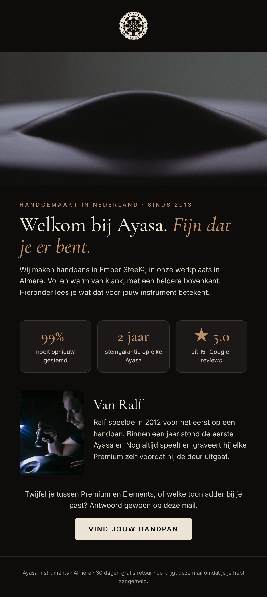
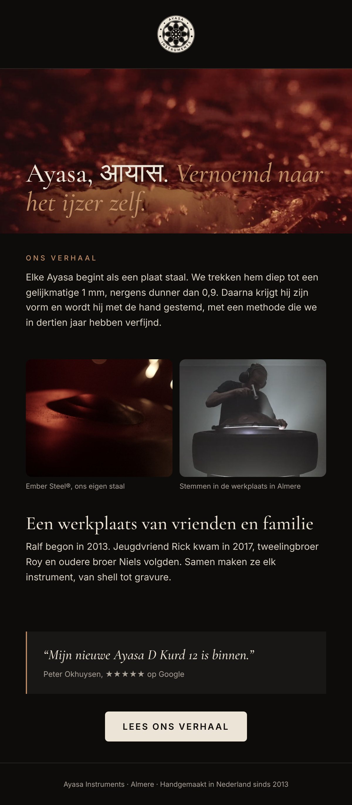

Voorbeelden voor Ayasa Instruments
Vijf redenen voor een handpan uit Almere.
Vijf advertenties en twee nieuwsbrieven, gemaakt met jullie eigen foto's en productinformatie. Een idee van Issey Kooijmans van Digital Essence; niets hiervan is gepubliceerd.
Hoi team Ayasa, de video op jullie homepage, met Ralf aan het stemmen en de rekken vol handpans, vond ik prachtig. Daarmee en met jullie foto's heb ik vijf advertenties en twee nieuwsbrieven gemaakt. Niets is gepubliceerd. Past het niet, zeg het gerust.
Eerst even uitgelegd
Wat is een invalshoek?
Een invalshoek is de reden waarom iemand iets koopt. Dezelfde handpan kun je op heel veel manieren verkopen, omdat niet iedereen om dezelfde reden koopt.
Dezelfde handpan, vijf verschillende redenen om hem te kopen. Elke reden wordt een eigen advertentie.
- 01Iemand zoals ik"Wie speelt er eigenlijk op zo'n handpan, en past dat bij mij?"
- 02Nieuw/lancering"Een Ayasa is vast te duur voor mij, of is er nu iets nieuws?"
- 03Hoe het werkt"Waarom zou ik meer betalen dan voor een handpan van een groot merk?"
- 04Bewijs"Gaat hij na een jaar niet vals klinken?"
- 05Zekerheid"Wat als hij in het echt anders klinkt dan in de video?"
We testen die invalshoeken naast elkaar. Na een paar dagen zie je welke het meest verkoopt. Daar maken we er meer van, en wat niet werkt, gaat eruit.
Zo werk ik
Van eerste blik tot bestelling.
Niet iedereen die een advertentie ziet, is meteen klaar om te kopen. Daarom maak ik voor elke stap andere advertenties. Zo spreek je iedereen aan op het moment waar hij of zij zit.
- Stap 1 · Top of funnel
Kennismaken
Mensen die Ayasa Instruments nog nooit hebben gezien.
Doel: dat ze stoppen met scrollen en nieuwsgierig worden.
Zoals een etalage: je loopt langs en kijkt even naar binnen.
- Stap 2 · Middle of funnel
Overtuigen
Mensen die jullie al eens zagen, maar nog twijfelen.
Doel: hun vragen beantwoorden. Wat is het, waarom dit en niet iets anders?
Zoals een verkoper die rustig uitlegt wat het verschil is.
- Stap 3 · Bottom of funnel
Kopen
Mensen die bijna willen bestellen.
Doel: het laatste duwtje, zoals een aanbod, reviews of de zekerheid van gratis retour.
Zoals de kassa: duidelijk, makkelijk en zonder risico.
Wat ik zag: in de advertentiebibliotheek van Meta staat nu één advertentie van Ayasa, voor één instrument dat op voorraad is. Dat is een advertentie voor mensen die al bijna kopen. Voor mensen die jullie nog niet kennen, of die twijfelen tussen merken, staat er nog niets. Terwijl jullie daar alles voor hebben: spelers als Malte Marten, het verhaal van Ember Steel®, 99% die nooit opnieuw gestemd hoeft te worden en 30 dagen gratis retour.
Advertenties · 9:16
Vijf advertenties, verdeeld over de stappen.
Tik op een advertentie om hem groot te bekijken.
Voor mensen die Ayasa Instruments nog niet kennen.
Voor mensen die jullie kennen, maar nog twijfelen.
Voor wie bijna bestelt.
Waarom advertenties
Zo groeien instrumentmerken op Instagram.
De meeste mensen ontdekken een nieuw merk niet via Google, maar tijdens het scrollen op Instagram. Handpanmerken als LIDAH Drums en Atlas handpan draaien daar nu tientallen advertenties tegelijk. Een maker met een eigen verhaal valt op met een vaste set: een advertentie die nieuwsgierig maakt, een die twijfels wegneemt en een die de koop makkelijk maakt. Een welkomstmail zorgt dat iemand die nog spaart of twijfelt, jullie niet vergeet.
Aantal advertenties: Meta Advertentiebibliotheek, 24-11-2026.
Nieuwsbrief 1 van 2 · Welkomstmail
Welkom bij Ayasa. Fijn dat je er bent.
Jullie aanmeldveld belooft alleen een paar mails per jaar met echt nieuws. Een welkomstmail direct na de aanmelding vertelt een nieuwe bezoeker meteen waarom een Ayasa anders is, en nodigt uit om te antwoorden met een vraag over Premium, Elements of de toonladder.
- Jullie eigen video-still als hero, met 'Handgemaakt in Nederland, sinds 2013'
- Drie bewijzen: 99%+ nooit opnieuw gestemd, 2 jaar stemgarantie, 5.0 uit 151 Google-reviews
- Een stukje van Ralf, met de uitnodiging om gewoon te antwoorden

Nieuwsbrief 2 van 2 · Merkverhaal
Ayasa, आयास. Vernoemd naar het ijzer zelf.
Een mail over waar de naam en de klank vandaan komen: van plaat staal tot gestemd instrument, en de werkplaats van vrienden en familie in Almere. Zo'n verhaal maakt van een duur instrument een merk waar mensen bij willen horen.
- Het staal: dieptegetrokken tot 1 mm, nergens dunner dan 0,9
- De werkplaats: Ralf, Rick, Roy en Niels
- Een echte review van Peter Okhuysen over zijn D Kurd 12

Ritme
Zo kan een week eruitzien.
Dit is een voorbeeld, geen vast pakket. De kracht zit in het ritme: regelmatig nieuwe invalshoeken testen in elke stap, en je nieuwsbrief vast versturen. Wat werkt, doen we vaker.
- MaNieuwe advertenties liveNieuwe invalshoeken in elke stap tegelijk testen.
- DiMeekijkenWelke invalshoek pakt de doelgroep op?
- WoBijsturenBudget naar wat werkt, de rest eruit.
- DoNieuwsbrief verstuurdVast moment, zodat lezers erop gaan rekenen.
- VrKorte updateWat werkte en wat we volgende week doen.
Benieuwd hoe dit voor Ayasa Instruments werkt?
Een kwartiertje bellen is genoeg om te kijken of het past. Geen verplichtingen.